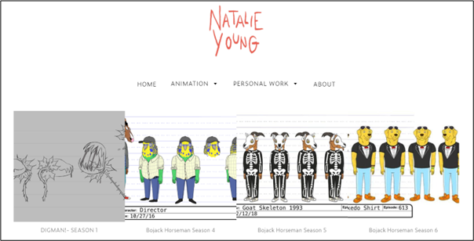

WEEK 2
Folder structure and URL scheme:
- I have a main folder where my repository was cloned and inside it are my HTML files, folders for images, scripts, and styles as well as a README file. The images folder contains all the images I will use for my website and the scripts and styles folders will contain my Javascript and CSS files respectively. The reason for my folder structure is that it is simple to understand and well-organised.
- According to the MDN Web Docs, a URL scheme is the first part of a URL which
indicates the protocol that the browser must use to request the resource
(MDN Contributors, 2023).Https
is the usual protocol for websites and it is the same for my website because my URL is: https://wits-digital-arts-interactive-media.github.io/WSOA3028A_2562617/. As far as I know a URL scheme cannot be created so I hope I have provided sufficient information about mine.
Inspirational websites:
These are some artists that I found inspirational to me as an aspiring animator. Their portfolio websites are nothing short of amazing and they used creative ways to display their work, which I hope to achieve by the end of the semester.
Ana Levy
I like how simple and straight-to-the-point Ana Levy's homepage is. She didn't fuss about adding an image or pattern for the background but instead chose to use the colour orange and it is simple but appealing to look at. When viewers want to explore other parts of her website they can click on the links in the light grey text.
Yulia Ruditskaya
I like how Yulia Ruditskaya's navigation tab shows viewers which page they are on by italicising it. This can be seen in the screenshot with the word "Reel" being in italics and the rest of the tabs being in normal text.
Natalie Rose Young
I really enjoyed seeing Natalie Rose Young's work because I have watched some of the animated shows that she has drawn characters for. However, I did not find her website interesting. I feel as though it is something that I could make so it lacked in creativity. Which is something I assumed she would excel at given her impeccable character designs and artworks. For instance, the background is white and it could have been better with a bit of colour or some patterns. Another thing is that her drawings do not have descriptions, she just put pictures without any captions about them and their significance.
Rafael Varona
I like how responsive Rafael Varona's website is. When a viewer hovers over an artwork, it gets greyed out and a link appears to show that they can read more about it. This is something that I will definitely use for my website to make it interesting.
Alison Donato
Unlike all the other websites I have seen, Alison Donato's has a left-side panel as a navigation bar. Instead of scrolling up to change the page, the viewer has all they need from this panel and it might make their experience of the website better. I found this very interesting because it kind of broke the convention of what I know websites to be.
Reflection on the Moulthrop reading:
This reading was a bit difficult to fully understand and it took me two days to finish. The beginning part about hypertext was easy to get into because last week I chose Noah Wardrip-Fruin's reading What hypertext is so I knew about its history. However, as it moved into the section about the laws of media, I was confused. I think a big part of my confusion is how this is relevant to what we are learning about. It was an overload of information but below, I was able to write some notes on some things that seemed important. As I contine to work on my website, when I get time, I will re-read this reading and give my interpretation of it after having read it for the second time.
Notes:
- The web is today's hypertext system
- Instant messaging is a hypertext-like service Marshall McLuhan's Laws of Media ask:
- What does it enhance or intensify?
- What does it render obsolete or displace?
- What does it retrieve that was previously obsolete?
- What does it produce or become when it is taken to its limit?
Reflection on Interaction and the WWW:
- Firstly, I see interaction as the concept of input and output. I do something and I expect something to happen in return, I speak to a person and I expect a reply from them, I click on a link and I expect a new tab to be opened. This lecture was really interesting. I liked the video from the Vox YouTube channel because it shaped what the lecture is about. I related to Don Norman when he spoke about not being able to use doors. Sometimes doors are labelled "push" but are actually "pull" and other times they are not labelled at all. After finishing the video, I started critiquing the design of some things that I interacted with daily such as windows, switches, and wardrobes and saw how cool or flawed the makers were in their design of those objects.
- So how does this relate to the idea of interaction? According to Aaron Smuts,
"Something is interactive if and only if it is responsive, does not completely control, is not completely controlled, and does not respond in a completely random fashion."
Going back to the door example, that door is supposed to respond to being touched by moving or making a sound. It should allow me to control it to decide if I want to open or close it, also I am not supposed to completely control it, for example, it should not require me to lift it. Finally, it should react the way that I want it to, when I want to walk into a building the door must be able to open and when I walk out it should be able to close. With the web, I learnt that computers are interactive so when one is on the web, they use the computer's functions to interact with it. I also learnt more about hypertext and hypermedia and from what I read, I even concluded that a modern form of hypertext is Wikipedia. Through this lecture, I found that I was correct because the images of the paper-based hypertexts look similar to how Wikipedia is structured.
References
- Moulthrop, S. (2003) ‘You Say You Want a Revolution? Hypertext and the Laws of Media (1991)’, in N. Wardrip-Fruin and N. Montfort (eds) The New Media Reader. HAR/CDR edition. Cambridge, Mass: The MIT Press
- MDN Contributors (2023). What is a URL? - Learn web development | MDN. [online] developer.mozilla.org. Available at: https://developer.mozilla.org/en-US/docs/Learn/Common_ questions/Web_mechanics/What_is_a_URL [Accessed 24 Feb. 2024].